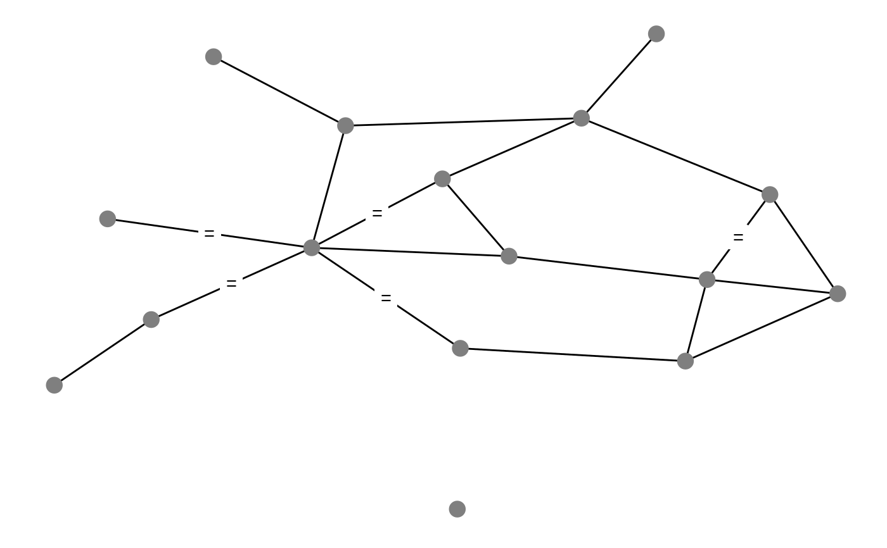

All arguments to both geom_edgetext and
geom_edgelabel are identical to those of
geom_label, with the only difference that the
label.size argument defaults to 0 in order to avoid drawing a
border around the edge labels. The labels will be drawn at mid-edges.
geom_text and geom_label produce strictly
identical results.
geom_edgetext(mapping = NULL, data = NULL, position = "identity", parse = FALSE, ..., nudge_x = 0, nudge_y = 0, label.padding = unit(0.25, "lines"), label.r = unit(0.15, "lines"), label.size = 0, na.rm = FALSE, show.legend = NA, inherit.aes = TRUE) geom_edgelabel(mapping = NULL, data = NULL, position = "identity", parse = FALSE, ..., nudge_x = 0, nudge_y = 0, label.padding = unit(0.25, "lines"), label.r = unit(0.15, "lines"), label.size = 0, na.rm = FALSE, show.legend = NA, inherit.aes = TRUE)
| mapping | Set of aesthetic mappings created by |
|---|---|
| data | The data to be displayed in this layer. There are three options: If A A |
| position | Position adjustment, either as a string, or the result of a call to a position adjustment function. |
| parse | If |
| ... | Other arguments passed on to |
| nudge_x, nudge_y | Horizontal and vertical adjustment to nudge labels by. Useful for offsetting text from points, particularly on discrete scales. |
| label.padding | Amount of padding around label. Defaults to 0.25 lines. |
| label.r | Radius of rounded corners. Defaults to 0.15 lines. |
| label.size | Size of label border, in mm. |
| na.rm | If |
| show.legend | logical. Should this layer be included in the legends?
|
| inherit.aes | If |
if (require(network) && require(sna)) { data(flo, package = "network") n <- network(flo, directed = FALSE) # arbitrary categorical edge attribute e <- sample(letters[ 1:4 ], network.edgecount(n), replace = TRUE) set.edge.attribute(n, "type", e) # with labelled edges ggplot(n, aes(x, y, xend = xend, yend = yend)) + geom_edges(aes(colour = type)) + geom_edgetext(aes(label = type, colour = type)) + geom_nodes(size = 4, colour = "grey50") + theme_blank() # label only a subset of all edges with arbitrary symbol edge_type <- function(x) { x[ x$type == "a", ] } ggplot(n, aes(x, y, xend = xend, yend = yend)) + geom_edges() + geom_edgetext(label = "=", data = edge_type) + geom_nodes(size = 4, colour = "grey50") + theme_blank() }